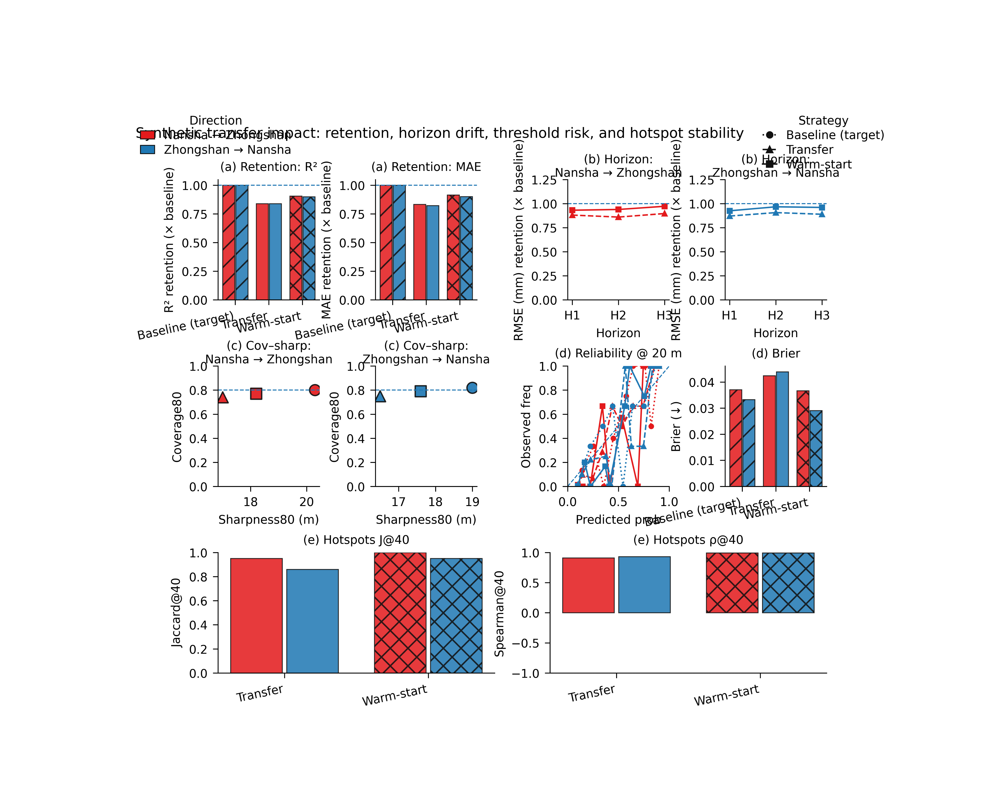

Note
Go to the end to download the full example code.
Transfer impact: what transfer changes for retention, risk, and hotspot stability#
This example teaches you how to read the GeoPrior transfer-impact figure.
The standard transferability figure tells us whether transfer works.
This figure asks a more operational question:
What is the impact of transfer on retention, uncertainty, threshold risk, and hotspot stability?
That is why this figure is especially useful for decision-facing analysis. It does not stop at one transfer score. It asks what the transferred workflow preserves and what it disturbs.
What the figure shows#
The real plotting backend builds a compact multi-panel page.
Retention vs target baseline - \(R^2\) retention - MAE retention
Horizon retention - one panel for
A_to_B- one panel forB_to_A- using a selectable metric such asrmseorr2Coverage–sharpness tradeoff - one panel per direction
Threshold risk skill - reliability diagram for exceedance - Brier score summary
Optional hotspot stability - either grouped bars for Jaccard and Spearman, - or timeline small multiples.
Why this matters#
A transfer workflow can look acceptable in average accuracy while still changing the risk profile or the spatial decision picture.
This figure helps the reader ask:
Does transfer retain enough predictive skill relative to the target-city baseline?
Does transfer preserve useful coverage behavior?
Does threshold exceedance risk remain calibrated?
Are the top hotspot regions still stable after transfer?
This gallery page builds a compact synthetic transfer table and a small synthetic job-metadata list so the example is fully executable during documentation builds.
Imports#
We use the real rendering backend from the project script.
Step 1 - Build a compact synthetic transfer-results table#
The real script expects an xfer_results.csv-like table with overall metrics and optional per-horizon metrics.
We include:
baseline rows for A_to_A and B_to_B,
transfer rows for A_to_B and B_to_A,
three calibration modes,
strategies baseline / xfer / warm,
and per-horizon RMSE columns so the horizon-retention panel has real values to read.
rows = [
# ---------------------------------------------------------
# Baselines
# ---------------------------------------------------------
{
"strategy": "baseline",
"rescale_mode": "as_is",
"direction": "A_to_A",
"source_city": "nansha",
"target_city": "nansha",
"split": "val",
"calibration": "source",
"overall_mae": 6.25,
"overall_mse": 73.0,
"overall_rmse": 8.54,
"overall_r2": 0.884,
"coverage80": 0.82,
"sharpness80": 19.0,
"per_horizon_rmse.H1": 7.4,
"per_horizon_rmse.H2": 8.7,
"per_horizon_rmse.H3": 9.6,
"subsidence_unit": "mm",
},
{
"strategy": "baseline",
"rescale_mode": "as_is",
"direction": "B_to_B",
"source_city": "zhongshan",
"target_city": "zhongshan",
"split": "val",
"calibration": "source",
"overall_mae": 6.82,
"overall_mse": 84.6,
"overall_rmse": 9.20,
"overall_r2": 0.839,
"coverage80": 0.80,
"sharpness80": 20.3,
"per_horizon_rmse.H1": 8.1,
"per_horizon_rmse.H2": 9.2,
"per_horizon_rmse.H3": 10.4,
"subsidence_unit": "mm",
},
# ---------------------------------------------------------
# A_to_B
# ---------------------------------------------------------
{
"strategy": "xfer",
"rescale_mode": "strict",
"direction": "A_to_B",
"source_city": "nansha",
"target_city": "zhongshan",
"split": "val",
"calibration": "source",
"overall_mae": 8.18,
"overall_mse": 108.0,
"overall_rmse": 10.39,
"overall_r2": 0.705,
"coverage80": 0.74,
"sharpness80": 17.0,
"per_horizon_rmse.H1": 9.2,
"per_horizon_rmse.H2": 10.7,
"per_horizon_rmse.H3": 11.6,
"subsidence_unit": "mm",
},
{
"strategy": "warm",
"rescale_mode": "strict",
"direction": "A_to_B",
"source_city": "nansha",
"target_city": "zhongshan",
"split": "val",
"calibration": "source",
"overall_mae": 7.45,
"overall_mse": 94.0,
"overall_rmse": 9.70,
"overall_r2": 0.760,
"coverage80": 0.77,
"sharpness80": 18.2,
"per_horizon_rmse.H1": 8.7,
"per_horizon_rmse.H2": 9.8,
"per_horizon_rmse.H3": 10.7,
"subsidence_unit": "mm",
},
# ---------------------------------------------------------
# B_to_A
# ---------------------------------------------------------
{
"strategy": "xfer",
"rescale_mode": "strict",
"direction": "B_to_A",
"source_city": "zhongshan",
"target_city": "nansha",
"split": "val",
"calibration": "source",
"overall_mae": 7.60,
"overall_mse": 96.8,
"overall_rmse": 9.84,
"overall_r2": 0.742,
"coverage80": 0.75,
"sharpness80": 16.5,
"per_horizon_rmse.H1": 8.5,
"per_horizon_rmse.H2": 9.6,
"per_horizon_rmse.H3": 10.8,
"subsidence_unit": "mm",
},
{
"strategy": "warm",
"rescale_mode": "strict",
"direction": "B_to_A",
"source_city": "zhongshan",
"target_city": "nansha",
"split": "val",
"calibration": "source",
"overall_mae": 6.94,
"overall_mse": 83.8,
"overall_rmse": 9.15,
"overall_r2": 0.796,
"coverage80": 0.79,
"sharpness80": 17.6,
"per_horizon_rmse.H1": 8.0,
"per_horizon_rmse.H2": 9.0,
"per_horizon_rmse.H3": 10.0,
"subsidence_unit": "mm",
},
]
df0 = pd.DataFrame(rows)
print("Synthetic xfer-results table")
print(df0.to_string(index=False))
Synthetic xfer-results table
strategy rescale_mode direction source_city target_city split calibration overall_mae overall_mse overall_rmse overall_r2 coverage80 sharpness80 per_horizon_rmse.H1 per_horizon_rmse.H2 per_horizon_rmse.H3 subsidence_unit
baseline as_is A_to_A nansha nansha val source 6.25 73.0 8.54 0.884 0.82 19.0 7.4 8.7 9.6 mm
baseline as_is B_to_B zhongshan zhongshan val source 6.82 84.6 9.20 0.839 0.80 20.3 8.1 9.2 10.4 mm
xfer strict A_to_B nansha zhongshan val source 8.18 108.0 10.39 0.705 0.74 17.0 9.2 10.7 11.6 mm
warm strict A_to_B nansha zhongshan val source 7.45 94.0 9.70 0.760 0.77 18.2 8.7 9.8 10.7 mm
xfer strict B_to_A zhongshan nansha val source 7.60 96.8 9.84 0.742 0.75 16.5 8.5 9.6 10.8 mm
warm strict B_to_A zhongshan nansha val source 6.94 83.8 9.15 0.796 0.79 17.6 8.0 9.0 10.0 mm
Step 2 - Build compact synthetic xfer_results.json-like rows#
The risk and hotspot panels use xfer_rows metadata that point to per-job evaluation CSVs.
For the lesson we create a few synthetic evaluation CSVs and then assemble row records similar to the real JSON entries.
tmp_dir = Path(
tempfile.mkdtemp(prefix="gp_sg_xfer_impact_")
)
def make_eval_csv(
*,
path: Path,
threshold_shift: float,
hotspot_shift: float,
seed: int,
) -> None:
import numpy as np
import pandas as pd
rr = np.random.default_rng(seed)
rows = []
nx = 11
ny = 8
years = [2023, 2024, 2025]
xs = np.linspace(0.0, 12000.0, nx)
ys = np.linspace(0.0, 8000.0, ny)
X, Y = np.meshgrid(xs, ys)
xn = (X - X.min()) / (X.max() - X.min())
yn = (Y - Y.min()) / (Y.max() - Y.min())
base = (
18.0
* np.exp(
-(
((xn - (0.62 + hotspot_shift)) ** 2) / 0.030
+ ((yn - 0.40) ** 2) / 0.050
)
)
+ 7.0 * xn
+ 3.0 * yn
).ravel()
sample_idx = np.arange(base.size)
for step, yy in enumerate(years, start=1):
q50 = (0.85 + 0.18 * step) * base + threshold_shift
width = 4.0 + 0.10 * q50
q10 = q50 - width
q90 = q50 + width
y = q50 + rr.normal(0.0, 2.5 + 0.4 * step, size=base.size)
for i in range(base.size):
rows.append(
{
"sample_idx": int(sample_idx[i]),
"coord_t": int(yy),
"coord_x": float(X.ravel()[i]),
"coord_y": float(Y.ravel()[i]),
"subsidence_actual": float(y[i]),
"subsidence_q10": float(q10[i]),
"subsidence_q50": float(q50[i]),
"subsidence_q90": float(q90[i]),
}
)
pd.DataFrame(rows).to_csv(path, index=False)
eval_specs = [
("A_to_A", "baseline", "source", 0.0, 0.00, 101),
("B_to_B", "baseline", "source", 2.5, 0.02, 102),
("A_to_B", "xfer", "source", 3.8, 0.06, 103),
("A_to_B", "warm", "source", 2.0, 0.03, 104),
("B_to_A", "xfer", "source", 2.8, -0.03, 105),
("B_to_A", "warm", "source", 1.4, -0.01, 106),
]
xfer_rows = []
for direction, strategy, calib, tshift, hshift, seed in eval_specs:
p = tmp_dir / f"{direction}_{strategy}_{calib}.csv"
make_eval_csv(
path=p,
threshold_shift=tshift,
hotspot_shift=hshift,
seed=seed,
)
xfer_rows.append(
{
"direction": direction,
"strategy": strategy,
"split": "val",
"calibration": calib,
"csv_eval": str(p),
}
)
print("")
print("Synthetic evaluation rows")
for r in xfer_rows:
print(r)
Synthetic evaluation rows
{'direction': 'A_to_A', 'strategy': 'baseline', 'split': 'val', 'calibration': 'source', 'csv_eval': 'C:\\Users\\Daniel\\AppData\\Local\\Temp\\gp_sg_xfer_impact_25lievoe\\A_to_A_baseline_source.csv'}
{'direction': 'B_to_B', 'strategy': 'baseline', 'split': 'val', 'calibration': 'source', 'csv_eval': 'C:\\Users\\Daniel\\AppData\\Local\\Temp\\gp_sg_xfer_impact_25lievoe\\B_to_B_baseline_source.csv'}
{'direction': 'A_to_B', 'strategy': 'xfer', 'split': 'val', 'calibration': 'source', 'csv_eval': 'C:\\Users\\Daniel\\AppData\\Local\\Temp\\gp_sg_xfer_impact_25lievoe\\A_to_B_xfer_source.csv'}
{'direction': 'A_to_B', 'strategy': 'warm', 'split': 'val', 'calibration': 'source', 'csv_eval': 'C:\\Users\\Daniel\\AppData\\Local\\Temp\\gp_sg_xfer_impact_25lievoe\\A_to_B_warm_source.csv'}
{'direction': 'B_to_A', 'strategy': 'xfer', 'split': 'val', 'calibration': 'source', 'csv_eval': 'C:\\Users\\Daniel\\AppData\\Local\\Temp\\gp_sg_xfer_impact_25lievoe\\B_to_A_xfer_source.csv'}
{'direction': 'B_to_A', 'strategy': 'warm', 'split': 'val', 'calibration': 'source', 'csv_eval': 'C:\\Users\\Daniel\\AppData\\Local\\Temp\\gp_sg_xfer_impact_25lievoe\\B_to_A_warm_source.csv'}
Step 3 - Canonicalize like the real workflow#
The real script canonicalizes the transfer table before plotting. We follow that exact path.
csv_path = tmp_dir / "xfer_results.csv"
df0.to_csv(csv_path, index=False)
df = pd.read_csv(csv_path)
df = _canon_cols(df)
print("")
print("Reloaded rows")
print(len(df))
Reloaded rows
6
Step 4 - Render the real impact figure#
We call the actual render(…) function.
This script supports:
show_legend
show_labels
show_ticklabels
show_title
show_panel_titles
and not panel-label controls.
For the gallery page, we keep the PNG and delete the SVG.
out_base = tmp_dir / "xfer_impact_gallery"
png_path, svg_path = render(
df,
split="val",
calib="source",
strategies=["baseline", "xfer", "warm"],
directions=["A_to_B", "B_to_A"],
rescale_mode="strict",
baseline_rescale="as_is",
horizon_metric="rmse",
cov_target=0.80,
threshold=20.0,
xfer_rows=xfer_rows,
add_hotspots=True,
hotspot_k=40,
hotspot_score="q50",
hotspot_horizon="H3",
hotspot_ref="baseline",
hotspot_style="bar",
hotspot_errorbars=False,
out=out_base,
text=TextFlags(
show_legend=True,
show_labels=True,
show_ticklabels=True,
show_title=True,
show_panel_titles=True,
title=(
"Synthetic transfer impact: retention, horizon drift, "
"threshold risk, and hotspot stability"
),
),
)
if Path(svg_path).exists():
Path(svg_path).unlink()
Step 5 - Show the PNG produced by the backend#
The gallery page displays the real PNG generated by the project plotting code.
img = mpimg.imread(str(png_path))
fig, ax = plt.subplots(figsize=(9.0, 7.3))
ax.imshow(img)
ax.axis("off")

(np.float64(-0.5), np.float64(4381.5), np.float64(3499.5), np.float64(-0.5))
Step 6 - Quantify one compact retention summary#
A useful numerical summary is to compare the best transferred MAE against the target-city baseline used for retention.
summary_rows = []
for direction, baseline_dir in [
("A_to_B", "B_to_B"),
("B_to_A", "A_to_A"),
]:
base = df.loc[
df["direction"].eq(baseline_dir)
& df["strategy"].eq("baseline")
& df["calibration"].eq("source")
].copy()
b_mae = float(base["overall_mae"].iloc[0])
b_r2 = float(base["overall_r2"].iloc[0])
for strategy in ["xfer", "warm"]:
sub = df.loc[
df["direction"].eq(direction)
& df["strategy"].eq(strategy)
& df["calibration"].eq("source")
].copy()
summary_rows.append(
{
"direction": direction,
"strategy": strategy,
"mae_retention": float(
b_mae / float(sub["overall_mae"].iloc[0])
),
"r2_retention": float(
float(sub["overall_r2"].iloc[0]) / b_r2
),
}
)
summary = pd.DataFrame(summary_rows)
print("")
print("Retention summary")
print(summary.round(3).to_string(index=False))
Retention summary
direction strategy mae_retention r2_retention
A_to_B xfer 0.834 0.840
A_to_B warm 0.915 0.906
B_to_A xfer 0.822 0.839
B_to_A warm 0.901 0.900
Step 7 - Learn how to read panel (a)#
Panel (a) shows overall retention relative to the target-city baseline.
Two retention definitions are used:
R² retention = R² / R²_baseline
MAE retention = MAE_baseline / MAE
So in both subpanels, values closer to 1 are better, and values above 1 would mean the transfer outperformed the target baseline.
Step 8 - Learn how to read panel (b)#
Panel (b) is the horizon-retention panel.
This is useful because transfer does not always degrade evenly across lead time. A workflow may retain early horizons well but lose later horizons more sharply.
In this lesson we use RMSE retention, which is a practical
choice because the parser default for the script is
--horizon-metric rmse.
Step 9 - Learn how to read panel (c)#
Panel (c) shows coverage80 versus sharpness80 by transfer direction.
This is the uncertainty balance panel:
coverage tells us whether the interval contains the truth often enough,
sharpness tells us how wide the interval had to be.
The dashed horizontal line marks the target coverage. The best region is not simply the highest or the farthest left, but a sensible balance near the target.
Step 10 - Learn how to read panel (d)#
Panel (d) adds threshold-risk skill.
- Left:
reliability for exceedance probability
- Right:
Brier score summary
This is important because transfer may change the usefulness of exceedance probabilities even when average forecast skill looks acceptable.
Step 11 - Learn how to read panel (e)#
Panel (e) is optional hotspot stability.
In bar mode it summarizes:
Jaccard overlap at top-K,
Spearman rank correlation on the overlap.
This tells the reader whether the transferred model preserves the ranking and geometry of the most important hotspot regions.
In timeline mode, the same idea is expanded into year-wise small multiples.
Step 12 - Practical takeaway#
This figure is especially useful because it moves from pure transfer accuracy into operational consequences:
retained skill,
retained horizon behavior,
retained risk quality,
and retained hotspot ranking.
That makes it one of the strongest decision-oriented transfer pages in the whole figure-generation gallery.
Command-line version#
The same figure can be produced from the command line.
The real script supports:
--src,--xfer-csv, and optional--xfer-json,--splitand--calib,--strategies,--rescale-modeand--baseline-rescale,--horizon-metricwithr2 | mae | mse | rmse,--cov-targetand--threshold,optional hotspot controls such as
--add-hotspots,--hotspot-k,--hotspot-score,--hotspot-horizon,--hotspot-ref,--hotspot-style, and--hotspot-errorbars,plus the shared text flags added through
u.add_plot_text_args(..., default_out="figureS_xfer_impact").
Legacy dispatcher:
python -m scripts plot-xfer-impact \
--src results/xfer/nansha__zhongshan \
--split val \
--calib source \
--strategies baseline xfer warm \
--rescale-mode strict \
--baseline-rescale as_is \
--horizon-metric rmse \
--cov-target 0.80 \
--threshold 50 \
--add-hotspots true \
--hotspot-k 100 \
--hotspot-style bar \
--out figureS_xfer_impact
Timeline hotspot mode:
python -m scripts plot-xfer-impact \
--src results/xfer/nansha__zhongshan \
--split val \
--calib source \
--add-hotspots true \
--hotspot-style timeline \
--hotspot-score exceed \
--hotspot-horizon H3 \
--out figureS_xfer_impact
Modern CLI:
geoprior plot xfer-impact \
--src results/xfer/nansha__zhongshan \
--split val \
--calib source \
--out figureS_xfer_impact
The gallery page teaches the figure. The command line reproduces it in a workflow.
Total running time of the script: (0 minutes 21.982 seconds)